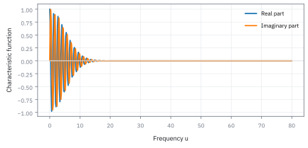
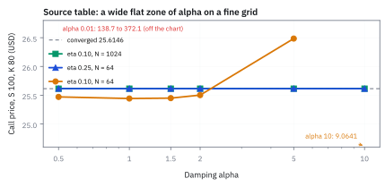

21.3 Fourier and FFT Pricing
หลายแบบจำลองไม่มีสูตรของ density ของราคาปลายทาง แต่มีสูตรของ characteristic function หน้านี้เอาสูตรนั้นมาตั้งราคา call: หน่วงราคา call ให้ลดเป็นศูนย์ทั้งสองข้างก่อน แปลง Fourier แล้วแปลงกลับเป็นราคาด้วยผลรวมเดียว และให้ FFT คิดราคาทุก strike ในรอบเดียว
ทีมค้า option ของธนาคาร (ต่อไปเรียกว่า “โต๊ะ”) ใช้แบบจำลอง Heston ตั้งราคา call option (สิทธิ์ซื้อหุ้นในราคาที่ตกลงไว้ ราคานี้เรียกว่า strike) ทุกเช้าโต๊ะต้อง calibrate คือปรับ parameter ของ Heston จนราคาที่แบบจำลองให้ ตรงกับราคา call ที่ซื้อขายจริงในตลาดหลาย ๆ strike
งานนี้ทำด้วย optimizer คือโปรแกรมที่ลองชุด parameter ไปทีละชุดหลายร้อยรอบ ทุกรอบมันต้องการราคา call ของ Heston ใหม่ทุก strike เครื่องตั้งราคาจึงต้องเร็ว
วิธีในหน้า Heston คิดราคา call หนึ่ง strike จากอินทิกรัลสองตัว แต่ละตัวประเมินบน 3,001 จุด และทุกจุดต้องเรียก characteristic function หนึ่งครั้ง (characteristic function คือสูตรที่ Heston มีให้แทนสูตรของ density หน้านี้จะอธิบายว่ามันคืออะไร) ราคาหนึ่ง strike จึงเรียกมัน $2\times3{,}001=6{,}002$ ครั้ง
โต๊ะต้องการราคาเจ็ด strike ที่อายุเดียวกัน ชุดราคานี้เรียกว่า smile (ชื่อมาจากรูปโค้งของ implied volatility ดูหน้า volatility smile) หนึ่ง smile จึงเรียก characteristic function $7\times6{,}002=42{,}014$ ครั้ง และ optimizer ขอ smile ใหม่ทุกรอบ
เพื่อนคนหนึ่งเขียนเครื่องตั้งราคาแบบใหม่ เรียกว่าแบบ Fourier ซึ่งให้ราคาทุก strike ในรอบเดียว ก่อนใช้กับ Heston เขาทดสอบกับ call ที่รู้คำตอบแน่นอน คือ call ใต้แบบจำลอง Black–Scholes:
- ราคาหุ้นวันนี้ $S_0=\$100$
- strike $K=\$80$ และอายุ $T=1$ ปี
- ดอกเบี้ย $r=5\%$ ต่อปี และหุ้นจ่ายปันผล $q=1\%$ ต่อปี
- ความผันผวน $\sigma=30\%$ ต่อปี คือ SD (standard deviation) ของผลตอบแทนแบบ log ในหนึ่งปี
- ราคาที่ถูกต้องจากสูตร Black–Scholes คือ \$25.6146 (ขั้นแรกของหน้านี้คำนวณให้ดู)
เครื่องของเพื่อนมีปุ่มตั้งค่า เช่น “ค่าหน่วง” $\alpha$ และจำนวนจุดของกริด (หน้านี้จะอธิบายว่าแต่ละปุ่มทำอะไร) เขาตั้ง $\alpha=0.01$ ได้ราคา 372.11 แล้วลองตั้ง $\alpha=10$ บนกริด 64 จุด ได้ 9.06 ทั้งสองค่าห่างจาก 25.6146 มาก เขาจึงสรุปว่าวิธี Fourier ใช้ไม่ได้ ถูกไหม?
ลองตอบก่อนเปิดเฉลย
ไม่ถูก ที่ผิดคือค่าที่ตั้ง ไม่ใช่วิธี
ที่ $\alpha=0.01$ การหน่วงอ่อนเกินไป call ที่ strike เกือบศูนย์มีค่าราว \$99 ทุกตัว ราคาเหล่านี้สะท้อนวนกลับมาบวกทับราคาที่ strike \$80 ซ้ำแล้วซ้ำอีก ส่วนเกินคือ $372.11-25.61=346.50$ ขั้นเรื่อง aliasing จะคำนวณตัวเลขนี้จากเสียงสะท้อนโดยตรง
ที่ $\alpha=10$ กริดมี 64 จุดห่างกัน 0.1 จึงไปถึงแค่ความถี่ $63\times0.1=6.3$ (ความถี่คือตัวแปรที่เครื่องอินทิเกรตไปตามแกน) ตรงนั้นสิ่งที่ต้องอินทิเกรตยังมีขนาดราว 12% ของค่าที่ความถี่ศูนย์ อินทิกรัลจึงถูกตัดทั้งที่ยังไม่จบ
เมื่อตั้ง $\alpha=1.5$ ระยะความถี่ 0.25 และ 4,096 จุด เครื่องได้ \$25.6146 ตรงสูตร และ FFT ครั้งเดียวให้ราคา 4,096 strike จากการเรียก characteristic function 4,096 ครั้ง เทียบกับวิธีเดิม $42{,}014/4{,}096\approx10.3$ งานจึงลดลงราวสิบเท่า และ smile ของ Heston ออกมาตรงทุกตัว
ภาพรวมก่อนลงสูตร
call จ่ายเงินในวันหมดอายุ ถ้าหุ้นจบที่ $S_T$ สูงกว่า strike $K$ ผู้ถือได้ $S_T-K$ ถ้าต่ำกว่าได้ศูนย์ เงินก้อนนี้เรียกว่า payoff ราคา call วันนี้คือค่าเฉลี่ยของ payoff ทุกฉากที่เป็นไปได้ แล้วคิดลดกลับมาเป็นเงินวันนี้
การหาค่าเฉลี่ยนี้ต้องรู้ density ของราคาวันหมดอายุ คือฟังก์ชันที่บอกว่าราคาปลายทางแต่ละระดับมีโอกาสมากน้อยแค่ไหน ถ้ามีสูตรของ density อินทิกรัลเชิงตัวเลขธรรมดาก็ให้ราคาได้ สูตร Black–Scholes คือคำตอบของอินทิกรัลนี้เมื่อ density เป็น lognormal
ปัญหาคือแบบจำลองที่ใช้กันจริงหลายตัว เช่น Heston ไม่มีสูตรของ density หรือมีแต่คำนวณแพง สิ่งที่มันมีให้คือ characteristic function ของ $\ln S_T$ คือค่าเฉลี่ยของ $e^{iu\ln S_T}$ ที่ทุกตัวเลข $u$ ค่าชุดนี้เก็บข้อมูลของการแจกแจงไว้ครบเท่ากับ density หน้านี้สร้างทางจาก characteristic function ไปถึงราคา call
ทางที่ตรงที่สุดคือมองราคา call เป็นฟังก์ชันของ log-strike $k=\ln K$ แล้วแปลง Fourier แต่การแปลง Fourier ต้องการฟังก์ชันที่ลดเป็นศูนย์ทั้งสองข้าง ราคา call ไม่ลดทางซ้าย เพราะ strike ยิ่งใกล้ศูนย์ call ยิ่งมีค่าเกือบเท่าหุ้นทั้งตัว (ช่องบนของรูปด้านล่าง)
Carr กับ Madan แก้ด้วยการคูณราคา call ด้วย $e^{\alpha k}$ โดย $\alpha$ คือค่าหน่วงที่เป็นบวก ผลคูณลดเป็นศูนย์ทั้งสองข้าง (ช่องกลาง) และ Fourier transform ของมัน (ช่องล่าง) เขียนได้ด้วย characteristic function ล้วน ๆ
หน้านี้เดินตามลำดับนี้:
- ตั้งราคาด้วย density ก่อน เพื่อมีคำตอบไว้เทียบ
- ทำความรู้จัก characteristic function
- หน่วงราคา call แล้วหา transform ของ Carr–Madan
- แปลงกลับเป็นราคาด้วยผลรวมเดียว
- เลือกกริดให้ผลรวมนั้นกลายเป็น FFT ซึ่งให้ราคาทุก strike พร้อมกัน
- ดูว่าค่าที่ตั้งผิดทำให้ราคาพังอย่างไร ทั้งการตัดความถี่และการสะท้อนของหาง (aliasing)
- ใช้โค้ดเดียวกันกับ Heston และ Variance Gamma
รูป — ราคา call, ราคาที่หน่วงแล้ว และ Fourier transform ของมัน
ทั้งสามช่องใช้ call ทดสอบจากโจทย์เปิด ($S_0=\$100$, $T=1$, $r=5\%$, $q=1\%$, $\sigma=30\%$) แกนนอนของสองช่องบนคือ log-strike $k=\ln K$ เส้นประตั้งคือ strike \$80 ซึ่งอยู่ที่ $k=\ln80=4.38$
ช่องบนคือราคา call $C(k)$ เป็นดอลลาร์ ให้ดูทางซ้าย: เส้นแบนอยู่ที่ $S_0e^{-qT}=100e^{-0.01}=99.005$ ไม่ลดลงเป็นศูนย์ จึงแปลง Fourier ตรง ๆ ไม่ได้
ช่องกลางคือราคาที่หน่วงแล้ว $c(k)=e^{1.5k}C(k)$ ทางซ้าย $e^{1.5k}$ เล็กลงจนกดผลคูณเป็นศูนย์ ทางขวา $C(k)$ ลดเร็วกว่าที่ $e^{1.5k}$ โต ผลคูณจึงเป็นเนินเดียว ยอดสูงราว 19,800 ที่ $k\approx4.2$ (ค่าที่อ่านจากเส้น)
ช่องล่างคือขนาดของ Fourier transform $\psi(u)$ ของ $c(k)$ หารด้วยค่าที่ $u=0$ ซึ่งคือ 33,187 (ขั้นตารางค่าที่ตั้งจะแสดงที่มาของค่าแบบนี้) ขนาดเหลือครึ่งที่ $u=1.64$ เหลือ 4.2% ที่ $u=5$ และ 0.04% ที่ $u=10$ เพราะหดเร็วแบบนี้ อินทิกรัลขากลับจึงหยุดที่ความถี่ไม่สูงนักได้
ศัพท์ที่ใช้ในหัวข้อนี้
- Calibrate
- การปรับ parameter ของแบบจำลองจนราคาที่แบบจำลองให้ตรงกับราคาในตลาดมากที่สุด โปรแกรมที่ลองชุด parameter ซ้ำไปเรื่อย ๆ เรียกว่า optimizer
- Payoff
- เงินที่ option จ่ายในวันหมดอายุ ของ call คือ $\max(S_T-K,\,0)$
- Density
- ฟังก์ชันที่บอกว่าราคาปลายทางแต่ละระดับมีโอกาสมากน้อยแค่ไหน พื้นที่ใต้มันทั้งเส้นเท่ากับหนึ่ง
- Risk-neutral measure
- ชุดโอกาสที่ใช้ตั้งราคา ในชุดนี้หุ้นโตโดยเฉลี่ยในอัตราดอกเบี้ยหักปันผล $r-q$ ราคา option คือค่าเฉลี่ยของ payoff ใต้ชุดนี้ แล้วคิดลดด้วย $e^{-rT}$
- Characteristic function
- ค่าเฉลี่ย $\mathbb E[e^{iux}]$ ของตัวแปรสุ่ม $x$ คิดที่ทุกตัวเลข $u$ (เรียกว่าความถี่) ค่าชุดนี้เก็บข้อมูลของการแจกแจงไว้ครบ ใช้แทน density กับแบบจำลองที่เขียน density ไม่ได้แต่เขียนตัวนี้ได้ เช่น Heston
- Fourier transform
- การเขียนฟังก์ชันเป็นผลรวมของคลื่นทุกความถี่ การแปลงกลับคือการรวมคลื่นเหล่านั้นคืนเป็นฟังก์ชัน หน้านี้ใช้มันย้ายการคำนวณราคาไปทำฝั่งความถี่ ซึ่งมีสูตรให้
- Damping ($\alpha$)
- การคูณราคา call ด้วย $e^{\alpha k}$ ก่อนแปลง ต้องทำเพราะราคา call ไม่ลดเป็นศูนย์เมื่อ strike เข้าใกล้ศูนย์ ถ้าไม่หน่วง อินทิกรัลของการแปลงจะไม่มีค่า
- Carr–Madan transform
- สูตรที่เขียน Fourier transform ของราคา call ที่หน่วงแล้ว ด้วย characteristic function ของ $\ln S_T$ อย่างเดียว ใช้ตั้งราคา call ได้กับทุกแบบจำลองที่รู้ characteristic function
- FFT
- Fast Fourier Transform คืออัลกอริทึมที่คิดผลรวมแบบ Fourier ของ $N$ จุด ให้ผลลัพธ์ครบทั้ง $N$ ตัวพร้อมกัน ด้วยงานราว $N\log_2N$ แทน $N^2$ หน้านี้ใช้มันคิดราคาทุก strike ในรอบเดียว
- Aliasing
- ความผิดที่เกิดเพราะผลรวมบนกริดความถี่ที่ห่างกัน $\eta$ แยกไม่ออกระหว่าง log-strike $k$ กับ $k+2\pi/\eta$ ราคาที่ strike อื่นจึงสะท้อนมาทับ ถ้าระยะ $2\pi/\eta$ สั้นเกินหรือหน่วงน้อยเกิน เสียงสะท้อนนี้ใหญ่จนเห็น
- Implied volatility
- ความผันผวนที่ต้องใส่ในสูตร Black–Scholes เพื่อให้ได้ราคาเท่ากับราคาที่มีอยู่ ใช้เป็นหน่วยกลางในการเทียบราคา option ต่าง strike
สัญลักษณ์และหน่วย
| สัญลักษณ์ | ความหมาย | หน่วย |
|---|---|---|
| $S_0,\ K,\ T$ | ราคาหุ้นวันนี้ strike และอายุ | ดอลลาร์, ดอลลาร์, ปี |
| $r,\ q,\ \sigma$ | ดอกเบี้ย อัตราปันผลต่อเนื่อง และความผันผวน | ต่อปี, ต่อปี, ต่อรากที่สองของปี |
| $x_T=\ln S_T,\ k=\ln K$ | log ของราคาปลายทาง และ log-strike | ไม่มีหน่วย |
| $\varphi(u)$ | characteristic function ของ $x_T$ ภายใต้ risk-neutral measure | ไม่มีหน่วย |
| $u$ | ความถี่ (จำนวนจริง หรือเชิงซ้อนเมื่อเลื่อนลงในแกนจินตภาพ) | ต่อหน่วยของ $k$ |
| $C(k),\ c(k)$ | ราคา call ที่ strike $e^k$ และราคาที่หน่วงแล้ว $e^{\alpha k}C(k)$ | ดอลลาร์ |
| $\alpha,\ \psi(u)$ | ค่าหน่วง และ Fourier transform ของ $c(k)$ | ไม่มีหน่วย, ดอลลาร์ |
| $\eta,\ N$ | ระยะห่างของกริดความถี่ และจำนวนจุด | ต่อหน่วยของ $k$, ไม่มีหน่วย |
| $\lambda,\ k_0$ | ระยะห่างของกริด log-strike และ log-strike ตัวแรก | ไม่มีหน่วย |
| $L=2\pi/\eta$ | ระยะสะท้อน: log-strike สองตัวที่ห่างกันเท่านี้ ผลรวมบนกริดแยกไม่ออก | หน่วยของ $k$ |
ขั้นที่ 1 — ราคาคือพื้นที่ใต้ payoff คูณ density แล้วคิดลด
ก่อนสร้างวิธีใหม่ เราต้องมีคำตอบที่เชื่อได้ไว้เทียบ จึงเริ่มจากวิธีที่ตรงที่สุด ราคา call คือค่าเฉลี่ยของ payoff แล้วคิดลด ค่าเฉลี่ยหาได้โดยคูณ payoff กับ density ของราคาปลายทาง แล้วหาพื้นที่ใต้ผลคูณ ค่าเฉลี่ยนี้คิดใต้ risk-neutral measure คือชุดโอกาสที่ใช้ตั้งราคา ซึ่งหุ้นโตโดยเฉลี่ยในอัตรา $r-q$ ถ้าลืมคิดลดด้วย $e^{-rT}$ เราจะได้มูลค่า ณ วันหมดอายุ ไม่ใช่ราคาวันนี้
ใช้ call ทดสอบจากโจทย์เปิด ($S_0=100$, $K=80$, $T=1$, $r=5\%$, $q=1\%$, $\sigma=30\%$) ใต้ Black–Scholes ค่า $\ln S_T$ เป็น Normal ที่มีค่าเฉลี่ย $\mu$ และ SD $\sigma\sqrt T$ density ของ $S_T$ จึงเป็น lognormal $f(s)$ ข้างล่าง อินทิกรัลประมาณด้วยแท่งสี่เหลี่ยมคางหมูกว้าง $h=0.2$ ดอลลาร์ จำนวน $N=4{,}096$ แท่ง เริ่มที่ strike
อินทิกรัลเริ่มที่ $K$ เพราะ payoff เป็นศูนย์เมื่อหุ้นจบต่ำกว่า strike ใน $\mu$ ค่า $0.045$ คือ $\tfrac12\sigma^2=\tfrac12(0.09)$ พจน์นี้ทำให้ค่าเฉลี่ยของ $S_T$ ออกมาเท่ากับราคา forward พอดี ขั้นถัดไปจะตรวจข้อนี้
แท่งแรกอยู่ที่ strike พอดี กฎสี่เหลี่ยมคางหมูจึงนับมันครึ่งแท่ง ($w_1=h/2$) แท่งสุดท้ายอยู่ที่ $s_N=80+4{,}095\times0.2=\$899$ ซึ่ง density แทบเป็นศูนย์แล้ว ราคาที่ได้ต่างจากสูตร Black–Scholes เพียง $25.61462-25.61458=0.00004$ ส่วนต่างนี้มาจากความกว้างของแท่ง
ตัวเลข $C_{\rm BS}$ มาจากสูตรปิด $S_0e^{-qT}\mathcal N(d_1)-Ke^{-rT}\mathcal N(d_2)$ โดย $d_1=\dfrac{\ln(100/80)+0.085}{0.3}=1.027145$ และ $d_2=d_1-0.3=0.727145$ ค่า $0.085$ คือ $r-q+\tfrac12\sigma^2=0.05-0.01+0.045$ และ $\mathcal N(\cdot)$ คือ CDF ของ Normal มาตรฐาน
วิธีนี้ตรงไปตรงมาและแม่น งานโตตามจำนวนแท่ง $N$ แต่มีเงื่อนไขข้อเดียว คือต้องมีสูตรของ $f$ Heston ไม่มีสูตรนี้ ขั้นต่อไปจึงหันไปใช้ของที่ Heston มี
ขั้นที่ 2 — characteristic function: ค่าเฉลี่ยของจุดบนวงกลม
Heston ไม่มีสูตรของ density แต่มีสูตรของ characteristic function ก่อนจะใช้ของชิ้นนี้ เราต้องรู้ก่อนว่ามันคืออะไร และมันเก็บข้อมูลอะไรไว้
เริ่มจาก Fourier transform ของฟังก์ชัน $f(x)$ ซึ่งคือ $\Phi(u)=\int e^{iux}f(x)\,dx$ และแปลงกลับได้ด้วย $f(x)=\tfrac1{2\pi}\int e^{-iux}\Phi(u)\,du$ ตัว $e^{iux}=\cos(ux)+i\sin(ux)$ คือจุดบนวงกลมรัศมีหนึ่ง ที่ทำมุม $ux$ กับแกนนอน ถ้า $f$ เป็น density อินทิกรัลนี้ก็คือค่าเฉลี่ยของจุดบนวงกลม $\mathbb E[e^{iuX}]$ ค่าเฉลี่ยนี้มีชื่อว่า characteristic function และตัวเลข $u$ เรียกว่าความถี่
ลองกับของเล่นก่อน สุ่มได้ $X=0$ หรือ $X=1$ อย่างละครึ่ง ที่ $u=0$ มุมเป็นศูนย์ทั้งคู่ ทั้งสองผลชี้ไปทางขวา ค่าเฉลี่ยจึงเป็นหนึ่ง ที่ $u=\pi$ ผล 0 ยังชี้ขวา แต่ผล 1 หมุนไปครึ่งรอบจนชี้ซ้าย สองลูกศรมีน้ำหนักเท่ากันจึงหักล้างกัน (รูปด้านล่าง)
จากนั้นใช้กับของจริง คือ $x_T=\ln S_T$ ของ Black–Scholes ซึ่งเขียนได้ว่า $x_T=\mu+\sigma\sqrt T\,Z$ โดย $Z$ เป็น Normal มาตรฐาน ค่าเฉลี่ยของ exponential ของ Normal หาได้ด้วยการจัดกำลังสองสมบูรณ์ แบบเดียวกับใน moment generating function
รูป — ของเล่น X = 0 หรือ 1: สองจุดบนวงกลมที่ u = π
ทำไมต้องใช้ค่าเฉลี่ยของจุดบนวงกลม แทน density ตรง ๆ? เพราะสูตรแปลงกลับด้านบนเอา $\varphi$ ทุกความถี่มารวมคืนเป็น density ได้ ค่าชุดนี้จึงเก็บข้อมูลของการแจกแจงไว้ครบ และเพราะจุดบนวงกลมยาวหนึ่งเสมอ ค่าเฉลี่ยของมันจึงยาวไม่เกินหนึ่ง $\varphi$ จึงมีค่าเสมอ ต่างจาก moment generating function $\mathbb E[e^{tX}]$ ที่บางการแจกแจงหางอ้วนไม่มีค่า
จังหวะที่ต้องระวังคือการใช้สูตรของ Normal $\mathbb E[e^{tZ}]=e^{t^2/2}$ กับ $t=iu\sigma\sqrt T$ ซึ่งเป็นจำนวนเชิงซ้อน การจัดกำลังสองสมบูรณ์ไม่ได้ใช้สมบัติใดที่ต้องให้ $t$ เป็นจำนวนจริง สูตรจึงยังใช้ได้ และได้ $t^2=(iu\sigma\sqrt T)^2=-u^2\sigma^2T$ ส่วนที่ติดลบนี้ทำให้ขนาดของ $\varphi$ คือ $e^{-\frac12\sigma^2Tu^2}$ คลื่นจึงหดลงเร็วเมื่อความถี่สูงขึ้น
ส่วนท้ายของสูตรคือการตรวจที่ใช้ได้กับทุกแบบจำลอง ใส่ $u=-i$ แล้ว $iu=i(-i)=1$ ตัว $e^{iux_T}$ จึงกลายเป็น $e^{x_T}=S_T$ ดังนั้น $\varphi(-i)=\mathbb E[S_T]$ ซึ่งใต้ risk-neutral measure ต้องเท่ากับราคา forward $S_0e^{(r-q)T}$ (ราคาที่ตกลงวันนี้เพื่อรับหุ้นในวัน $T$) ทั้งสองทางได้ 104.0811 ตรงกัน อีกการตรวจคือ $\varphi(0)=\mathbb E[e^0]=1$
รูป — characteristic function ของ Black–Scholes เป็นคลื่นที่หดลงเร็ว

รูปนี้ใช้ชุดตัวเลขของกริด FFT ที่จะพบด้านล่าง ไม่ใช่ call ทดสอบ: $S_0=100$, $r=5\%$, $q=0$, $\sigma=20\%$, $T=1$ สองเส้นคือส่วนจริงและส่วนจินตภาพของ $\varphi(u)$ บนความถี่ 0 ถึง 80
ชุดนี้มี $\mu=\ln100+(0.05-0.02)=4.6352$ คลื่นจึงหมุนครบหนึ่งรอบทุก $2\pi/\mu=2\pi/4.6352=1.356$ หน่วยความถี่ ขนาดของคลื่นคือ $e^{-\frac12\sigma^2u^2}=e^{-0.02u^2}$ ซึ่งได้ $e^{-2}=0.135$ ที่ $u=10$, $e^{-4.5}=0.011$ ที่ $u=15$ และ $e^{-8}=0.00034$ ที่ $u=20$ ครึ่งขวาของรูปจึงแบนราบ แบบจำลองที่หางอ้วนกว่านี้จะหดช้ากว่า
ขั้นที่ 3 — ทำไมต้องหน่วงราคา call ก่อนแปลง
ตอนนี้เราอยากเขียนราคา call เป็นฟังก์ชันของ log-strike $k$ แล้วแปลง Fourier ทั้งเส้น การแปลงต้องการให้ฟังก์ชันลดเป็นศูนย์ทั้งสองปลาย ไม่อย่างนั้นอินทิกรัล $\int e^{iuk}C(k)\,dk$ ไม่มีค่า
ทางขวา (strike สูงมาก) ราคา call ลดเป็นศูนย์ เพราะหุ้นแทบไม่มีโอกาสขึ้นไปถึง ทางซ้าย (strike เข้าใกล้ศูนย์ หรือ $k\to-\infty$) call กลายเป็นสิทธิ์รับหุ้นในวัน $T$ แทบฟรี มูลค่าวันนี้ของสิทธิ์นี้คือ $S_0e^{-qT}$ คือราคาหุ้นหักปันผลที่ผู้ถือ call ไม่ได้รับระหว่างทาง ราคาจึงไม่ลดเป็นศูนย์ (ช่องบนของรูปภาพรวม) ทางแก้คือคูณด้วย $e^{\alpha k}$ ซึ่งเล็กลงเร็วเมื่อ $k$ ติดลบ
เมื่อ strike ต่ำมาก call แทบแน่นอนว่าจะถูกใช้สิทธิ์ ราคาจึงเกือบเท่ากับมูลค่าหุ้นลบมูลค่าวันนี้ของ strike ที่ต้องจ่าย ($e^{-rT}=e^{-0.05}=0.951$) ที่ strike \$1 call ยังมีค่าถึง 98.054 เกือบเท่าหุ้น ถ้าไม่หน่วง พื้นที่ใต้ $C(k)$ ทางซ้ายยาวไม่สิ้นสุด
เมื่อหน่วงด้วย $\alpha=1.5$ ที่ $k=-5$ (strike $e^{-5}=\$0.0067$) ตัวคูณคือ $e^{1.5\times(-5)}=e^{-7.5}=0.000553$ ค่าที่หน่วงแล้วเหลือ 0.0548 และยิ่งไปทางซ้ายยิ่งหดตาม $e^{1.5k}$
แต่ทางขวา $e^{\alpha k}$ โตขึ้น จึงต้องให้ $C(k)$ ลดเร็วกว่าที่ $e^{\alpha k}$ โต เงื่อนไขนั้นคือบรรทัดสุดท้าย: ค่าเฉลี่ยของ $S_T$ ยกกำลัง $\alpha+1$ (moment ลำดับ $\alpha+1$) ต้องมีค่า ขั้นถัดไปจะเห็นว่าพื้นที่ใต้ $c(k)$ ทั้งเส้นคือ $e^{-rT}\mathbb E[S_T^{\alpha+1}]/(\alpha(\alpha+1))$ พื้นที่จึงมีค่าก็ต่อเมื่อ moment นี้มีค่า
Black–Scholes มี moment ทุกลำดับ จึงใช้ $\alpha$ เท่าไรก็ได้ แบบจำลองที่หางอ้วนมีเพดาน: ถ้า $\alpha$ สูงเกิน moment ไม่มีค่า $\alpha$ จึงต้องใหญ่พอจะกดทางซ้าย และเล็กพอให้ moment ยังมีค่า
ขั้นที่ 4 — transform ของ Carr–Madan: สลับลำดับอินทิกรัลแล้วคิดข้างในได้เอง
ราคา call ที่หน่วงแล้วลดเป็นศูนย์ทั้งสองข้าง จึงแปลง Fourier ได้ เป้าหมายของขั้นนี้คือเขียน Fourier transform ของมัน $\psi(u)$ ด้วย $\varphi$ อย่างเดียว เพราะ $\varphi$ คือของที่ Heston มีให้
วิธีคือแทน $C(k)$ ด้วยนิยามจากขั้นแรก (ค่าเฉลี่ยของ payoff แล้วคิดลด) แต่เขียนด้วย log ของราคาปลายทาง $x=\ln s$ ให้ $g(x)$ แทน density ของ $x_T$ จากนั้นสลับลำดับอินทิกรัล คือตรึงราคาปลายทาง $x$ ไว้ก่อน แล้วอินทิเกรตตาม $k$ เมื่อตรึง $x$ ไว้ call จ่าย $e^x-e^k$ เฉพาะ strike ที่ต่ำกว่า $e^x$ คือ $k\lt x$ อินทิกรัลข้างในจึงวิ่งจาก $-\infty$ ถึง $x$ และคิดด้วยมือได้
คลื่น $e^{iuk}$ กับตัวหน่วง $e^{\alpha k}$ รวมกันได้เป็นก้อนเดียว $e^{(\alpha+iu)k}=e^{zk}$ จึงตั้งชื่อ $z$ ไว้ ส่วน $(e^x-e^k)^+$ คือ payoff ซึ่งเป็นศูนย์เมื่อ $e^k\gt e^x$ หลังสลับลำดับ ทุกอย่างที่ขึ้นกับ $k$ ไปรวมอยู่ใน $I(x)$
$I(x)$ คืออินทิกรัลของ exponential สองตัว: $\int_{-\infty}^{x}e^{zk}\,dk=e^{zx}/z$ และ $\int_{-\infty}^{x}e^{(z+1)k}\,dk=e^{(z+1)x}/(z+1)$ ปลายล่างหายไปเพราะส่วนจริงของ $z$ คือ $\alpha\gt0$ จึงทำให้ $e^{zk}\to0$ เมื่อ $k\to-\infty$ นี่คือหน้าที่ของการหน่วงในภาษาของสูตร รวมสองก้อนได้ $1/z-1/(z+1)=1/(z(z+1))$
กลเม็ดหลักอยู่ตรง $\mathbb E[e^{(z+1)x_T}]$ เพราะ $i\big(u-(\alpha+1)i\big)x=iux+(\alpha+1)x=(z+1)x$ ค่าเฉลี่ยนี้จึงคือ characteristic function ที่ความถี่ $u-(\alpha+1)i$ คือความถี่ที่เลื่อนลงไปในแกนจินตภาพ $\alpha+1$ หน่วย ถ้ารู้ $\varphi$ ก็รู้ $\psi$ ทุกความถี่ โดยไม่ต้องรู้ density เลย
ทำไมสลับลำดับอินทิกรัลได้? เพราะขนาดของ $e^{(z+1)x}$ คือ $e^{(\alpha+1)x}=s^{\alpha+1}$ ค่าเฉลี่ยของมันคือ moment ลำดับ $\alpha+1$ ซึ่งมีค่าตามเงื่อนไขของขั้นที่แล้ว ใส่ $u=0$ จะได้ $\psi(0)=e^{-rT}\mathbb E[S_T^{\alpha+1}]/(\alpha(\alpha+1))$ ซึ่งคือพื้นที่ใต้ $c(k)$ ทั้งเส้นตามที่สัญญาไว้
ขั้นที่ 5 — กลับเป็นราคา: ครึ่งแกนบวก และผลรวมสี่เหลี่ยมคางหมู
ตอนนี้รู้ $\psi$ ทุกความถี่แล้ว ขั้นนี้แปลงกลับเป็น $c(k)$ แล้วหารตัวหน่วง $e^{\alpha k}$ ออก ก็ได้ราคา call $C(k)$ อินทิกรัลขากลับวิ่งทั้งแกน ตั้งแต่ $-\infty$ ถึง $\infty$ แต่ครึ่งซ้ายไม่ต้องคิดแยก เพราะ $c(k)$ เป็นจำนวนจริง
คอมพิวเตอร์อินทิเกรตถึงอนันต์ไม่ได้ จึงตัดอินทิกรัลที่ขอบบน แบ่งเป็น $N$ ช่องกว้าง $\eta$ บนกริดความถี่ $u_j=j\eta$ แล้วใช้กฎสี่เหลี่ยมคางหมูแบบเดียวกับขั้นแรก ให้ $F(u)$ แทนสิ่งที่ต้องอินทิเกรต
ทำไมทิ้งครึ่งซ้ายได้? เพราะ $c(k)$ เป็นจำนวนจริง ค่าของ $F$ ที่ $-u$ จึงเป็น conjugate ของค่าที่ $u$ (ส่วนจริงเท่าเดิม ส่วนจินตภาพกลับเครื่องหมาย) จับคู่ค่าที่ $u$ กับ $-u$ บวกกัน ส่วนจินตภาพหักล้าง เหลือสองเท่าของส่วนจริง เลขสองนี้ตัดกับ $2\pi$ ของสูตรแปลงกลับ เหลือ $\pi$ จุดแรก $u_0=0$ อยู่ที่ขอบของช่วง จึงได้น้ำหนักครึ่งช่อง
ผลรวมนี้หน้าตาเหมือนผลรวมของ density ในขั้นแรกทุกอย่าง คือผลรวมถ่วงน้ำหนักบนกริด และงานโตตาม $N$ ต่างกันแค่ว่าตอนนี้ใช้ $\psi$ ซึ่งมาจาก characteristic function แทน density
call ทดสอบได้ 25.614621 เท่ากับสูตร Black–Scholes ทุกหลักที่พิมพ์ แม่นกว่าแท่ง density (ซึ่งพลาด 0.00004) โดยเรียก characteristic function เพียง 1,024 ครั้ง กริดไปถึงความถี่ $1{,}023\times0.25=255.75$ ไกลเกินจุดที่คลื่นหดหมดแล้ว (ช่องล่างของรูปภาพรวมเหลือ 0.04% ตั้งแต่ $u=10$)
ขั้นที่ 6 — จากหนึ่ง strike เป็นทั้งแถว: เลือกกริดให้ผลรวมกลายเป็น FFT
ขั้นที่แล้วให้ราคาทีละ strike ถ้าโต๊ะต้องการ $m$ strike ต้องทำผลรวม $N$ พจน์ใหม่ทุก strike งานจึงเป็น $m\times N$ ขั้นนี้หาทางคิดทุก strike ในรอบเดียว
เครื่องมือคือ FFT มันคิดผลรวมรูปนี้ $X_m=\sum_{j}x_j\,e^{-2\pi ijm/N}$ (เรียกว่า discrete Fourier transform หรือ DFT) ให้ครบทุก $m=0,\dots,N-1$ พร้อมกัน ด้วยงานราว $N\log_2N$ แทน $N^2$ เราจึงต้องจัดผลรวมของเราให้มีหน้าตาแบบนี้ วิธีคือวาง log-strike เป็นกริด $k_m=k_0+m\lambda$ ($\lambda$ คือระยะห่าง $k_0$ คือจุดเริ่ม) แล้วเลือก $\lambda$ ให้ $\lambda\eta=2\pi/N$
หัวใจของขั้นนี้คือมุม $u_jk_m$ ในคลื่น $e^{-iu_jk_m}$ มุมนี้แยกเป็นสองส่วน ส่วนแรก $j\eta k_0$ ขึ้นกับ $j$ อย่างเดียว จึงพับเข้าไปใน $x_j$ ได้ ส่วนที่สองคือ $jm\,\eta\lambda$ ถ้าเลือก $\eta\lambda=2\pi/N$ มันจะเป็น $2\pi jm/N$ ซึ่งคือมุมของ DFT พอดี ผลรวมทุก strike จึงเป็น DFT ของ $x_j$ ที่ FFT คิดให้ในรอบเดียว
ผลคือราคา 4,096 strike จากการเรียก characteristic function 4,096 ครั้ง บวก FFT หนึ่งครั้งที่ใช้การคูณบวกราว 49,152 ครั้ง ถ้าบวกตรง ๆ ทีละ strike จะใช้ราว 16.8 ล้านครั้ง
ราคาที่ต้องจ่ายคือสองกริดผูกกันด้วย $\lambda\eta=2\pi/N$ ถ้าอยากได้กริดความถี่ละเอียด ($\eta$ เล็ก) strike จะห่าง ที่นี่ $\lambda=0.006136$ แปลว่า strike ถัดไปคือ $Ke^{\lambda}=1.006155K$ คือใหญ่กว่าเดิมราว 0.6% และกริดทั้งแถวกว้าง $N\lambda=2\pi/\eta=2\pi/0.25=25.13$ ในหน่วย log-strike
จุดเริ่ม $k_0$ วางได้สองแบบ แบบแรกให้ราคาหุ้นวันนี้อยู่กลางแถว:
จุดที่ 2,048 จึงเป็น strike \$100 พอดี แถวนี้วิ่งตั้งแต่ strike $e^{-7.961}=\$0.00035$ ไปจนถึงราว \$28.5 ล้าน ส่วนใหญ่ของแถวจึงเป็น strike ที่ไม่มีใครซื้อขาย แบบที่สองให้ strike ที่สนใจเป็นตัวแรก เช่น $k_0=\ln80$ แล้วตัวถัดไปคือ $80e^{\lambda}=80.49$
ลองแบบแรกกับ Black–Scholes ชุด $S_0=100$, $r=5\%$, $q=0$, $\sigma=20\%$, $T=1$ ราคาที่จุด 2,048 ได้ 10.450584 เท่ากับสูตรปิด ซึ่งใช้ $d_1=(\ln(100/100)+0.05+\tfrac12(0.04))/0.2=0.07/0.2=0.35$ และ $d_2=0.35-0.2=0.15$
strike ที่โต๊ะขอมักไม่ตกบนกริดพอดี จึงใช้ interpolation แบบลูกบาศก์ใน $k$ คือลากเส้นโค้งกำลังสามผ่านสี่จุดของกริดที่อยู่รอบ ๆ แล้วอ่านค่าที่ strike ที่ต้องการ ที่ strike 70, 85, 115, 130 และ 150 ราคาที่อ่านได้พลาดจากสูตรไม่เกิน $10^{-7}$
รูป — แถวราคาที่ FFT ส่งคืน และกริด strike ที่ห่างกันราว 0.6%
รูปนี้คือ FFT หนึ่งครั้งของ Black–Scholes ชุด $S_0=100$, $r=5\%$, $q=0$, $\sigma=20\%$, $T=1$ ตั้งค่า $N=4{,}096$, $\eta=0.25$, $\alpha=1.5$ และให้ strike 100 อยู่กลางแถว
จุดน้ำเงินคือราคาที่ FFT ส่งคืนจริงในช่วง strike \$55 ถึง \$170 ช่วงนี้มีแค่ 184 จุดจาก 4,096 จุด และรูปแสดงทุกจุดที่สาม วงกลมส้มคือ strike ที่โต๊ะขอ ซึ่งไม่ตกบนกริด จึงอ่านราคาด้วย interpolation แบบลูกบาศก์ ได้ 33.5401, 20.4693, 10.4506, 4.4666, 1.6396 และ 0.3596 ที่ strike \$70, \$85, \$100, \$115, \$130 และ \$150 ตามลำดับ ทุกตัวพลาดจากสูตรไม่เกิน $10^{-7}$
ขีดด้านล่างคือทุกจุดของกริด ระยะห่างคือ $K(e^{\lambda}-1)=0.006155K$ จึงห่าง $55\times0.006155=\$0.34$ ที่ \$55, \$0.62 ที่ \$100 และ \$1.05 ที่ \$170 ขีดจึงถี่ทางซ้ายและห่างขึ้นทางขวา
ขั้นที่ 7 — ตารางของค่าที่ตั้ง: $\alpha$, $\eta$ และ $N$
เพื่อนในโจทย์เปิดได้ราคาแปลก ๆ สองตัว ขั้นนี้ลองค่าที่ตั้งทุกแบบอย่างเป็นระบบ เพื่อดูว่าตรงไหนปลอดภัยและตรงไหนพัง
โจทย์ให้อะไรมาบ้าง:
- call ทดสอบเดิม ($S_0=100$, $K=80$, $T=1$, $r=5\%$, $q=1\%$, $\sigma=30\%$) ซึ่งคำตอบที่ถูกคือ 25.6146
- คิดราคาด้วยผลรวมสี่เหลี่ยมคางหมูของขั้นแปลงกลับ ที่ strike \$80 อย่างเดียว
- ค่าหน่วง $\alpha$ เจ็ดค่า (แถวของตาราง)
- กริดสี่แบบ (คอลัมน์): ระยะความถี่ $\eta=0.1$ หรือ 0.25 คู่กับจำนวนจุด $N=64$ หรือ 1,024
ตัวเลขทุกช่องตรงกับตารางในเอกสารประกอบการสอนเรื่องนี้
| $\alpha$ | $\eta=0.1$, $N=64$ | $\eta=0.1$, $N=1{,}024$ | $\eta=0.25$, $N=64$ | $\eta=0.25$, $N=1{,}024$ |
|---|---|---|---|---|
| 0.01 | 138.7372 | 138.8336 | 372.1118 | 372.1118 |
| 0.5 | 25.4710 | 25.6146 | 25.6150 | 25.6150 |
| 1 | 25.4432 | 25.6146 | 25.6146 | 25.6146 |
| 1.5 | 25.4497 | 25.6146 | 25.6146 | 25.6146 |
| 2 | 25.5024 | 25.6146 | 25.6146 | 25.6146 |
| 5 | 26.4853 | 25.6146 | 25.6146 | 25.6146 |
| 10 | 9.0641 | 25.6146 | 25.6141 | 25.6146 |
เพื่ออธิบายสองช่องที่พัง เราต้องรู้สองตัวเลข ตัวแรกคือความสูงของสิ่งที่ต้องอินทิเกรตที่ $u=0$ เมื่อ $\alpha=0.01$ ซึ่งคือ $\psi(0)=e^{-rT}\mathbb E[S_T^{\alpha+1}]/(\alpha(\alpha+1))$ จากขั้น Carr–Madan ค่าเฉลี่ยของ $S_T^{p}$ ใต้ lognormal คือ $S_0^{p}e^{p(r-q-\frac12\sigma^2)T+\frac12p^2\sigma^2T}$ (สูตร MGF ของ Normal) ใส่ $p=1.01$:
ตัวที่สองคือ เมื่อ $\alpha=10$ ที่ความถี่ $u=6.3$ สิ่งที่ต้องอินทิเกรตยังเหลือกี่ส่วนของค่าที่ $u=0$ จากสูตร $\varphi$ ของ Black–Scholes ส่วนที่ขึ้นกับ $u$ ในขนาดของ $\varphi(u-(\alpha+1)i)$ คือ $e^{-\frac12\sigma^2Tu^2}=e^{-0.045u^2}$ ส่วนตัวหาร $\lvert(\alpha+iu)(\alpha+1+iu)\rvert$ โตขึ้นจากค่าที่ $u=0$ ซึ่งคือ $10\times11$:
คำตอบ: บนกริด 1,024 จุด ทุก $\alpha$ ตั้งแต่ 1 ถึง 10 ให้ 25.6146 ส่วน $\alpha=0.5$ ยังตรงที่ $\eta=0.1$ แต่เพี้ยนเล็กน้อยเป็น 25.6150 ที่ $\eta=0.25$ เพราะการหน่วงเริ่มอ่อน ช่องที่พังหนักมีสองแบบ
แบบแรกคือ $\alpha=0.01$ ตัวหาร $(\alpha+iu)(\alpha+1+iu)$ ที่ $u=0$ เหลือแค่ $0.01\times1.01=0.0101$ สิ่งที่ต้องอินทิเกรตจึงพุ่งเป็นเข็มสูง 10,273 และแคบราว $\alpha=0.01$ (รูปด้านล่าง) จุดแรกของกริดอยู่บนยอดเข็มพอดี และถูกนับด้วยน้ำหนัก $\eta/2$ เหมือนเข็มกว้างเท่าครึ่งช่อง ทั้งที่เข็มจริงแคบกว่านั้นมาก ยิ่ง $\eta$ กว้าง ยิ่งนับเกิน: ได้ 138.7 ที่ $\eta=0.1$ และ 372.1 ที่ $\eta=0.25$ ส่วนการเพิ่มจุดจาก 64 เป็น 1,024 ไม่ช่วย เพราะไม่ได้ทำให้ช่องแคบลง ขั้นถัดไปจะเห็นว่านี่คือเรื่องเดียวกับการสะท้อนของหาง
แบบที่สองคือ $\alpha=10$ บนกริด 64 จุดที่ห่าง 0.1 กริดหยุดที่ $u=63\times0.1=6.3$ ซึ่งสิ่งที่ต้องอินทิเกรตยังมีขนาด 12.3% ของค่าที่ $u=0$ อินทิกรัลถูกตัดทั้งที่ยังไม่จบ ราคาจึงขาดไป $25.6146-9.0641=16.55$ กริด 64 จุดที่ห่าง 0.25 ไปถึง $u=63\times0.25=15.75$ ตรงนั้นขนาดเหลือไม่ถึงหนึ่งในแสนของค่าที่ $u=0$ จึงได้ 25.6141 ใกล้คำตอบ
ตรวจเองใน 10 วินาที: ช่วงที่ปลอดภัยในตารางคือ $\alpha$ ราว 1 ถึง 2 กับกริดที่ไปถึงความถี่ที่คลื่นหดหมดแล้ว ถ้าไม่แน่ใจ ให้คิดราคาด้วย $\alpha$ สองค่า เช่น 1 และ 1.5 ถ้าราคาตรงกัน ค่าที่ตั้งใช้ได้
รูป — สิ่งที่ต้องอินทิเกรต: เรียบเมื่อ α = 1.5 เป็นเข็มเมื่อ α = 0.01
ทั้งสองช่องคือส่วนจริงของสิ่งที่ต้องอินทิเกรต $F(u)=e^{-iuk}\psi(u)$ ที่ strike \$80 ของ call ทดสอบ แกนตั้งของสองช่องใช้สเกลต่างกัน และแกนนอนของช่องขวาซูมเข้าไปแค่ความถี่ 0 ถึง 1
ช่องซ้ายคือ $\alpha=1.5$ เส้นลดอย่างเรียบจาก 33,187 ที่ $u=0$ และเหลือราว 600 ที่ $u=6$ แท่งส้มที่ห่างกัน 0.25 วางบนเส้นได้ดี กฎสี่เหลี่ยมคางหมูจึงแม่น
ช่องขวาคือ $\alpha=0.01$ สิ่งที่ต้องอินทิเกรตเป็นเข็มสูง 10,273 กว้างราว 0.01 จุดแรกของกริดอยู่บนยอดเข็มพอดี และถูกนับเหมือนเข็มกว้าง $\eta/2=0.125$ ส่วนจุดถัดไปที่ 0.25, 0.5, 0.75 และ 1 ติดลบราว −30 ถึง −50 ผลรวมจึงเกินไปหลายร้อยดอลลาร์
รูป — ตารางค่าที่ตั้ง: ช่วงของ α ที่แบนกว้างบนกริดละเอียด

รูปนี้วาดตัวเลขจากตารางค่าที่ตั้งด้านบน แกนนอนคือ $\alpha$ บนแกน log ตั้งแต่ 0.5 ถึง 10 แกนตั้งคือราคา \$24.6 ถึง \$26.8 เส้นประเทาคือคำตอบที่ถูก 25.6146
สี่เหลี่ยมเขียวคือกริด $\eta=0.1$, $N=1{,}024$ ซึ่งได้ 25.6146 ทุกค่า สามเหลี่ยมน้ำเงินคือ $\eta=0.25$, $N=64$ ซึ่งเกือบทับเส้นเขียว (25.6150 ที่ $\alpha=0.5$ และ 25.6141 ที่ $\alpha=10$) วงกลมส้มคือ $\eta=0.1$, $N=64$ ซึ่งแกว่งตั้งแต่ 25.4710 ถึง 26.4853 เมื่อ $\alpha$ อยู่ระหว่าง 0.5 ถึง 5 ให้สังเกตว่าเส้นเขียวแบนกว้าง: บนกริดที่ละเอียดพอ ราคาไม่ไวต่อ $\alpha$
ค่าที่ $\alpha=10$ ของวงกลมส้ม (9.0641) อยู่นอกกรอบ จึงชี้ด้วยลูกศร ค่าที่ $\alpha=0.01$ (138.7 ถึง 372.1) บอกด้วยข้อความ ส่วนคอลัมน์ $\eta=0.25$, $N=1{,}024$ ไม่ได้วาด
ขั้นที่ 8 — aliasing: ราคาที่ strike อื่นสะท้อนมาทับ
ตารางค่าที่ตั้งยังเหลือคำถามหนึ่ง: ทำไม $\alpha=0.01$ ได้ 372.1 ทั้งที่ราคาจริงคือ 25.61? ขั้นนี้ตอบด้วยการดูว่าผลรวมบนกริดความถี่คำนวณอะไรอยู่จริง ๆ
ผลรวมใช้แค่ความถี่ $u_j=j\eta$ ลองเลื่อน log-strike ไป $L=2\pi/\eta$ คลื่นทุกตัวในผลรวมจะได้ค่าเดิม เพราะ $e^{-iu_j(k+L)}=e^{-iu_jk}\,e^{-2\pi ij}$ และ $e^{-2\pi ij}=1$ เมื่อ $j$ เป็นจำนวนเต็ม ผลรวมจึงแยกไม่ออกระหว่าง $c(k)$ กับสำเนาของมันที่เลื่อนไปทุกระยะ $L$ สิ่งที่มันคำนวณได้จริงคือผลรวมของทุกสำเนา (ผลนี้มีชื่อว่า Poisson summation) หารตัวหน่วงออกแล้วได้สูตรที่อ่านง่าย
ราคาที่คำนวณได้ที่ strike $K$ คือราคาจริง ($n=0$) บวก “เสียงสะท้อน” ของราคาที่ strike $Ke^{-L}$, $Ke^{-2L}$, … ตัวหรี่ $e^{-n\alpha L}$ มาจากการหารตัวหน่วงออก: $e^{-\alpha k}\,e^{\alpha(k-nL)}=e^{-n\alpha L}$ เสียงสะท้อนจึงเบาลง $e^{-\alpha L}$ เท่าทุกครั้งที่สะท้อน สำเนาที่ $n$ ติดลบมาจาก strike สูงลิบ ซึ่ง call แทบไม่มีค่า จึงทิ้งได้
ลองกับ call ทดสอบที่ strike \$80 และ $\alpha=1.5$ บนกริดหยาบ $\eta=1.5$ เสียงสะท้อนแรกมาจาก call ที่ strike $80e^{-L}$ ซึ่งลึกในเงินมาก ราคาจึงประมาณได้ด้วย $S_0e^{-qT}-Ke^{-rT}$ แบบเดียวกับขั้นการหน่วง ให้ $E_1$ และ $E_2$ แทนเสียงสะท้อนแรกและที่สอง:
ความผิด 0.1831 นี้ตรงกับตารางด้านล่างพอดี เสียงสะท้อนที่สองมาจาก strike $80e^{-2L}=\$0.018$ ซึ่งมีค่าราว 99.0 แต่ถูกหรี่สองครั้ง จึงเหลือนิดเดียว
คราวนี้ $\alpha=0.01$ บนกริด $\eta=0.25$ ระยะสะท้อนยาว แต่การหรี่แทบไม่ทำงาน call ที่ strike เกือบศูนย์ซึ่งมีค่าราว 99.005 ทุกตัวจึงทับกันเป็นอนุกรมเรขาคณิต $\sum_{n\ge1}\beta^n=\beta/(1-\beta)$ โดย $\beta=e^{-\alpha L}$ คือตัวหรี่ต่อครั้ง:
ตัวเลข 372.1 คือตัวเลขในตารางค่าที่ตั้งพอดี ภาพเข็มที่ $u=0$ ในขั้นที่แล้ว กับภาพเสียงสะท้อนในขั้นนี้ จึงเป็นเรื่องเดียวกัน มองจากสองฝั่งของการแปลง: ฝั่งความถี่เห็นเข็มที่กริดนับเกิน ฝั่ง strike เห็นราคาของ strike เกือบศูนย์วนมาทับ
ทดลองให้เห็นกับ call ทดสอบที่ $\alpha=1.5$ เปลี่ยน $\eta$ ทีละค่า และเลือก $N$ ให้กริดไปถึงความถี่ 48 ถึง 64 ทุกแถว ซึ่งไกลเกินจุดที่คลื่นหดหมดแล้ว ความผิดที่เหลือจึงมาจากการสะท้อนอย่างเดียว คอลัมน์สุดท้ายคิดจากสูตรเสียงสะท้อนโดยตรง ไม่ผ่านกริด:
| $\eta$ | ระยะสะท้อน $L=2\pi/\eta$ | ราคาจากกริด | พลาด | เสียงสะท้อนจากสูตร |
|---|---|---|---|---|
| 0.25 | 25.13 | 25.614621 | 0 | 0 |
| 0.5 | 12.57 | 25.614622 | 0.0000006 | 0.0000006 |
| 1 | 6.28 | 25.622600 | 0.0080 | 0.0080 |
| 1.5 | 4.19 | 25.797698 | 0.1831 | 0.1831 |
| 2 | 3.14 | 26.482521 | 0.8679 | 0.8679 |
ราคาถูกต้องตราบที่ระยะสะท้อน $L$ ยาวพอ ให้เสียงสะท้อนถูกหรี่ $e^{-\alpha L}$ จนหาย การเพิ่ม $N$ อย่างเดียวไม่ช่วย เพราะ $L=2\pi/\eta$ ขึ้นกับ $\eta$ เท่านั้น ทางแก้คือลด $\eta$ หรือเพิ่ม $\alpha$ (แต่ไม่เกินเพดานของ moment)
ที่ $\eta=0.25$ ระยะสะท้อนคือ 25.13 เท่ากับความกว้างของแถว strike ของ FFT พอดี เพราะ $N\lambda=2\pi/\eta=L$ แถว strike ของ FFT จึงยาวหนึ่งรอบของการสะท้อนพอดี การเลือกกริด FFT กับการกันเสียงสะท้อนจึงเป็นเรื่องเดียวกัน
รูป — หางซ้ายของราคาที่หน่วงแล้ววนมาทับที่ strike 80
เส้นน้ำเงินคือราคาที่หน่วงแล้ว $c(k)=e^{1.5k}C(k)$ ของ call ทดสอบ บนแกนตั้งแบบ log ทางซ้ายเป็นเส้นตรง เพราะ $C(k)$ เกือบคงที่ที่ 99 ค่า $\ln c=1.5k+\ln99$ จึงเป็นเส้นตรงใน $k$ เส้นขึ้นถึงยอดราว 19,800 แล้วดิ่งลง เมื่อ strike สูงเกินกว่าที่หุ้นจะไปถึง
เส้นประส้มคือเส้นเดียวกันเลื่อนไปทางขวา $L=2\pi/\eta=4.19$ ผลรวมบนกริด $\eta=1.5$ แยกสำเนานี้ออกจากของจริงไม่ได้ ที่เส้นตั้งของ strike \$80 ค่าจริงคือ $80^{1.5}\times25.6146=715.5\times25.6146=18{,}328$ สำเนาเพิ่มเข้ามา $1.213^{1.5}\times97.85=131$ ซึ่งคือค่าที่ strike \$1.21 ตามลูกศร คิดเป็น $131/18{,}328=0.71\%$
เมื่อหารตัวหน่วงออก ส่วนเกินนี้คือ $131/715.5=\$0.18$ ตรงกับความผิด 0.1831 ในตาราง ถ้าใช้ $\eta=0.25$ สำเนาจะอยู่ห่างออกไป 25.13 หน่วย และแทบเป็นศูนย์ที่ strike \$80
ขั้นที่ 9 — โค้ดเดียว หลายแบบจำลอง: Heston และ Variance Gamma
ทุกอย่างที่สร้างมาใช้ Black–Scholes เป็นตัวทดสอบ เพราะรู้คำตอบ แต่จุดประสงค์จริงคือแบบจำลองที่ไม่มีสูตรปิด ขั้นนี้ลองว่าเครื่องเดียวกันใช้กับแบบจำลองอื่นได้จริงไหม โดยเปลี่ยนแค่ฟังก์ชัน $\varphi$ ที่ป้อนเข้าไป
โจทย์ให้อะไรมาบ้าง:
- call ทดสอบเดิม ($S_0=100$, $K=80$, $T=1$, $r=5\%$, $q=1\%$) และค่าที่ตั้ง $\alpha=1.5$, $\eta=0.25$, $N=4{,}096$
- Heston: variance ของหุ้นวันนี้ $v_0=0.04$ (ความผันผวน 20%) ถูกดึงกลับเข้าหาค่าเฉลี่ยระยะยาว $\theta=0.05$ ด้วยความเร็ว $\kappa=2$ ความผันผวนของ variance เอง $\xi=0.3$ และ correlation ระหว่างแรงสุ่มของหุ้นกับของ variance $\rho=-0.7$ ใช้ characteristic function รูปที่คำนวณได้เสถียรจากหน้า Heston
- Variance Gamma: Brownian motion (การเดินสุ่มแบบต่อเนื่อง) ที่มี drift คือทิศทางเคลื่อนเฉลี่ย $\theta_v=-0.4$ และความผันผวน $\sigma=0.3$ แต่เดินตาม “นาฬิกาสุ่ม” แบบ gamma คือเวลาของตลาดเดินเร็วบ้างช้าบ้าง (วันที่ข่าวเยอะ เวลาเดินเร็ว ราคาจึงกระโดด) ความไม่แน่นอนของนาฬิกาวัดด้วย $\nu=0.5$ คือ variance ของเวลาสุ่มต่อหนึ่งปี
Variance Gamma ต้องมีตัวแก้ drift $\omega$ เพื่อให้ $\mathbb E[S_T]$ เท่ากับ forward $S_0e^{(r-q)T}$ ตามการตรวจ $\varphi(-i)$:
คำตอบ: Heston ที่มีปันผล 1% ตามโจทย์ได้ 24.3325 ถ้าลืมใส่ปันผลได้ 25.2428 ซึ่งคือตัวเลขในตาราง Heston ที่มักใช้สอนกรณีนี้ ตารางนั้นจึงน่าจะรันด้วย $q=0$ ทั้งที่ระบุว่าปันผล 1% ส่วน Variance Gamma ได้ 28.2203 ซึ่งตรงกับตารางของมันเมื่อใส่ $q=1\%$
ทำไมสามราคานี้ (Black–Scholes 25.6146, Heston 24.3325, Variance Gamma 28.2203) ต่างกัน? ส่วนใหญ่เพราะสามแบบจำลองมีปริมาณ variance ไม่เท่ากัน ไม่ใช่เพราะรูปทรงของหาง ลองเทียบให้ยุติธรรมด้วย Black–Scholes ที่ใช้ variance ตลอดปีเท่ากัน:
$\mathbb E[\bar v_1]$ คือ variance เฉลี่ยตลอดหนึ่งปีที่คาดไว้ของ Heston (สูตรนี้สร้างไว้ในหน้า Heston) ตัวเลขที่ใส่คือ $v_0-\theta=0.04-0.05=-0.01$ และ $(1-e^{-2})/2=0.4323$ ได้ความผันผวนราว 21.37% ต่ำกว่า 30% ของ call ทดสอบมาก สูตรปิดของ Black–Scholes ที่ 21.37% ให้ราคา 23.8786 Heston ได้ 24.3325 สูงกว่านั้น \$0.45 เพราะ $\rho$ ติดลบ: หุ้นที่ร่วงมักมาพร้อม variance ที่พุ่ง หางซ้ายของการแจกแจงจึงอ้วน option ที่ strike ต่ำอย่าง \$80 จึงแพงขึ้น
Variance Gamma มี variance ต่อปีสองก้อน ก้อนแรก $\sigma^2$ มาจาก Brownian motion ก้อนที่สอง $\theta_v^2\nu$ มาจาก drift ที่เดินตามนาฬิกาซึ่งยาวสั้นไม่แน่นอน รวมได้ความผันผวนราว 41.23% Black–Scholes ที่ 41.23% ให้ 28.5110 ใกล้กับ 28.2203 ของ Variance Gamma ราคานี้สูงกว่า 25.6146 เพราะ variance มากกว่า
ข้อสรุปของขั้นนี้คือความหมายของ “ไม่ผูกกับแบบจำลอง”: เครื่องเดียวกันใช้ได้กับทุกแบบจำลองที่เขียน characteristic function ได้ เปลี่ยนแค่ $\varphi$ ตัวเดียว
ตรวจเองใน 10 วินาที: ถ้าลืม $\omega$ ใน Variance Gamma ค่า $\varphi(-i)$ จะไม่เท่ากับ forward และราคาทั้งแถวผิดตาม ถ้าลืมปันผลใน Heston ค่า $\varphi(-i)$ จะเป็น $100e^{0.05}=105.13$ แทน $100e^{0.04}=104.08$ ก่อนเชื่อราคาจากแบบจำลองใด ให้ตรวจ $\varphi(0)=1$ และ $\varphi(-i)=$ forward ก่อนเสมอ
ขั้นที่ 10 — smile ของ Heston จาก FFT ครั้งเดียว และการตรวจก่อนส่งให้ optimizer
ตอนนี้กลับไปที่งานของโต๊ะในโจทย์เปิด: optimizer ต้องการ smile ของ Heston ทั้งชุดทุกรอบ ขั้นนี้คิด smile ด้วย FFT ครั้งเดียว แล้วตรวจว่าราคาสมเหตุสมผลก่อนส่งให้ optimizer
โจทย์ให้อะไรมาบ้าง:
- Heston ชุดตัวอย่างของหน้า Heston: $S_0=100$, $T=1$, $r=3\%$, $q=1\%$, $v_0=0.09$, $\theta=0.04$, $\kappa=2$, $\xi=0.3$, $\rho=-0.7$
- กริด FFT แบบให้ strike 100 อยู่กลางแถว: $N=4{,}096$, $\eta=0.25$, $\alpha=1.5$
- อ่านราคาที่ strike 70 ถึง 130 ด้วย interpolation แบบลูกบาศก์ แล้วเทียบกับผลรวมของ strike เดียวที่คิดตรง ๆ
- แปลงราคาเป็น implied volatility (ความผันผวนที่ใส่ใน Black–Scholes แล้วได้ราคาเท่ากัน) ด้วยการแบ่งครึ่งช่วง แบบเดียวกับหน้า volatility smile
| strike | ราคาตรง | จาก FFT | implied vol (%) |
|---|---|---|---|
| 70 | 32.080646 | 32.080646 | 28.48 |
| 80 | 23.714721 | 23.714721 | 26.93 |
| 90 | 16.393203 | 16.393203 | 25.49 |
| 100 | 10.434776 | 10.434776 | 24.15 |
| 110 | 6.017334 | 6.017334 | 22.93 |
| 120 | 3.097252 | 3.097252 | 21.83 |
| 130 | 1.409398 | 1.409398 | 20.86 |
คำตอบ: ราคาที่ strike \$100 (ATM คือ strike เท่าราคาหุ้นวันนี้) ได้ 10.434776 เท่ากับ 10.4348 ของหน้า Heston ซึ่งใช้สูตรแปลงกลับคนละแบบ (แบบสองความน่าจะเป็น $P_1$, $P_2$) smile ไล่จาก 28.48% ที่ strike 70 ลงไป 20.86% ที่ strike 130 ตรงกับตารางของหน้านั้นทุกตัว ราคาจาก FFT กับราคาที่คิดตรงต่างกันไม่เกิน $1.4\times10^{-7}$
ทั้งแถวเรียก characteristic function 4,096 ครั้ง วิธีสองความน่าจะเป็นต้องเรียก $7\times2\times3{,}001=42{,}014$ ครั้ง งานจึงลดลงราว $42{,}014/4{,}096\approx10$ เท่า
ตรวจเองใน 10 วินาที: ก่อนส่งราคาให้ optimizer โค้ดตรวจสี่ข้อ
- $\varphi(0)=1$
- $\varphi(-i)$ ต้องเท่ากับ forward $100e^{(0.03-0.01)}=100e^{0.02}=102.0201$
- ราคา put (สิทธิ์ขาย) ที่ strike \$100 จาก put–call parity $P=C-S_0e^{-qT}+Ke^{-rT}$ ต้องเป็นบวก ถ้าติดลบ แปลว่าราคา call สูงเกินไป
- ราคาบนกริดตั้งแต่ strike \$50 ถึง \$200 ต้องลดลงเมื่อ strike สูงขึ้น และโค้งหงาย คือราคาลดลงช้าลงเรื่อย ๆ เมื่อ strike สูงขึ้น
call ที่ strike สูงกว่าจ่ายน้อยกว่าเสมอ จึงต้องถูกกว่า และถ้าเส้นราคาไม่โค้งหงาย การซื้อขาย call สาม strike ที่อยู่ติดกันจะได้กำไรแน่นอนโดยไม่เสี่ยง (ช่องเงินฟรี) ถ้าข้อใดไม่ผ่าน optimizer จะพยายาม fit ความผิดของเครื่อง แทนที่จะ fit ตลาด
ความผิดที่ให้ตัวเลขผิดโดยไม่มีอะไรเตือน
ตั้ง $\alpha$ เล็กเกินหรือใหญ่เกิน: โปรแกรมไม่ฟ้องอะไร แต่ราคาผิดทั้งก้อน ที่ $\alpha=0.01$ ได้ 372.11 แทน 25.61 ส่วนเกิน $372.11-25.61=346.50$ คือเสียงสะท้อนของ call ที่ strike เกือบศูนย์ $99.005\times0.77777/0.22223=346.5$ ที่ $\alpha=10$ บนกริด 64 จุดห่าง 0.1 ได้ 9.06 เพราะกริดหยุดที่ $u=6.3$ ทั้งที่สิ่งที่ต้องอินทิเกรตยังเหลือ 12% ของค่าที่ $u=0$ วิธีกันคือคิดด้วย $\alpha$ สองค่า (เช่น 1 และ 1.5) แล้วดูว่าราคาตรงกัน
ลืมใส่ปันผลใน drift: Heston ของ call ทดสอบได้ 25.2428 แทน 24.3325 ผิดไป $25.2428-24.3325=\$0.9103$ ต่อหุ้น ตัวตรวจ $\varphi(-i)$ จับได้ทันที เพราะได้ $100e^{0.05}=105.13$ แทน forward ที่ถูก $100e^{0.04}=104.08$
ระยะความถี่ $\eta$ ห่างเกิน: $\eta=1.5$ ได้ 25.7977 แทน 25.6146 ส่วนเกิน $25.7977-25.6146=0.1831$ คือเสียงสะท้อนของ call ที่ strike \$1.21 ซึ่งหรี่ลงด้วย $e^{-6.283}=0.0018674$ ราคาที่ผิดแบบนี้ขยับไปพร้อมกันทั้งแถว จึงไม่โผล่เป็นจุดแปลกให้เห็น
อ่านราคาจากจุดของกริดที่ใกล้ที่สุด โดยไม่ interpolate: strike \$115 ไม่อยู่บนกริด จุดที่ใกล้ที่สุดคือ strike 115.157 ซึ่งราคา 4.4232 ราคาที่ถูกที่ \$115 คือ 4.4666 จึงพลาดไป $4.4666-4.4232=0.0434$ ขณะที่ interpolation แบบลูกบาศก์พลาดไม่ถึง $10^{-7}$
ใช้ทำอะไรบนโต๊ะจริง
เครื่องตั้งราคาแบบ Fourier อยู่ในวงจร calibration ของทุกแบบจำลองที่มี characteristic function เช่น Heston, Variance Gamma และแบบจำลองที่ราคากระโดดได้ ทุกครั้งที่ optimizer ขอราคาทั้ง smile เครื่องนี้ทำ FFT หนึ่งครั้งต่อหนึ่งอายุ แล้วอ่านราคาทุก strike ที่ตลาดมี
ข้อดีคือใช้ได้กับทุกแบบจำลองและเร็ว (งานราว $N\log_2N$) ข้อเสียคือ $\alpha$ มีเพดาน และต้องเลือก $\alpha$, $\eta$, $N$ ให้ถูก โต๊ะจึงเก็บค่าที่ตั้งและวิธี interpolate ไว้คู่กับทุกราคา เพราะราคาจากสองรอบเทียบกันได้ก็ต่อเมื่อใช้ค่าที่ตั้งเดียวกัน
วิธีนี้ใช้ได้กับสัญญาที่จ่ายเงินตามราคาวันหมดอายุวันเดียว สัญญาที่ขึ้นกับเส้นทางของราคา (barrier ซึ่งสิทธิ์หายไปถ้าราคาแตะระดับหนึ่ง) หรือใช้สิทธิ์ก่อนหมดอายุได้ (American) ต้องใช้ กริดของ finite difference หรือการจำลองแทน ถ้าต้องการราคาแค่ strike เดียวหรือไม่กี่ strike ผลรวมสี่เหลี่ยมคางหมูของขั้นแปลงกลับง่ายกว่า และได้ strike ตรงตามที่ขอ FFT ชนะเมื่อต้องการทั้งแถวซ้ำหลายรอบ
โจทย์ตรวจความเข้าใจ
1. เพื่อนอยากให้ FFT เร็วขึ้นอีก จึงลดจำนวนจุดเหลือ $N=1{,}024$ แต่คง $\eta=0.25$ ไว้ ระยะห่างของ log-strike $\lambda$ เป็นเท่าไร strike ที่อยู่ติดกันรอบ \$100 ห่างกันกี่ดอลลาร์ และแถว log-strike ทั้งแถวกว้างเท่าไร?
เฉลย
strike ถัดจาก \$100 จึงห่างไป \$2.48 ส่วนความกว้างทั้งแถวยังเท่าเดิม เพราะ $N\lambda=2\pi/\eta$ ไม่ขึ้นกับ $N$ ลด $N$ ลงสี่เท่าจึงทำให้ strike ห่างขึ้นสี่เท่า แต่แถวกว้างเท่าเดิม
2. ก่อนเชื่อโค้ด เราตรวจ characteristic function ที่ $u=-i$ เสมอ ใช้ characteristic function ของ Black–Scholes หา $\varphi(-i)$ ของ call ทดสอบ ($S_0=100$, $r=5\%$, $q=1\%$, $\sigma=30\%$, $T=1$) และบอกว่าการตรวจนี้ตรวจอะไร
เฉลย
เพราะ $i\times(-i)=1$ ค่า $\varphi(-i)$ คือค่าเฉลี่ยของ $S_T$ ใต้ risk-neutral measure ซึ่งต้องเท่ากับ forward $S_0e^{(r-q)T}$ ทั้งสองตัวได้ 104.0811 ตรงกัน ถ้าไม่ตรง drift ในโค้ดผิด
3. มีคนตั้ง $\eta=2$ เพื่อประหยัดจุด โดยคง $\alpha=1.5$ ไว้ ใช้สูตรเสียงสะท้อนประมาณว่าราคาของ call ทดสอบที่ strike \$80 จะผิดไปเท่าไร ให้ใช้ราคา call ที่ strike \$3.46 คือ 95.72 และที่ strike \$0.149 คือ 98.86 (ทั้งสองค่าจากสูตร Black–Scholes)
เฉลย
เสียงสะท้อนแรกมาจาก call ที่ strike \$3.46 หรี่ลงหนึ่งครั้ง เสียงที่สองมาจาก strike \$0.149 หรี่ลงสองครั้ง รวมกันได้ 0.8679 ตรงกับความผิดในตาราง aliasing $26.4825-25.6146=0.8679$
คำนวณซ้ำด้วย JavaScript
โค้ดนี้รันใน Node.js ได้โดยไม่ต้องติดตั้งแพ็กเกจ และคำนวณตัวเลขหลักของหน้านี้ซ้ำ ลำดับงานคือ ตรวจค่าที่ป้อน ตั้งราคาด้วย density ตรง ๆ สร้าง characteristic function ของ Black–Scholes, Heston และ Variance Gamma คิด transform ของ Carr–Madan ทั้งแบบ strike เดียวและแบบ FFT ทำตารางของ $\alpha$, $\eta$, $N$ เทียบความผิดกับสูตรเสียงสะท้อน อ่าน smile ของ Heston แล้วตรวจความสมเหตุสมผลของราคา ผลทั้งหมดพิมพ์เป็น JSON บรรทัดเดียว
เปิดดูโค้ด
// Fourier pricing: direct integration against a density, characteristic functions, the Carr-Madan
// damped transform, one strike by the trapezoid rule, all strikes by one FFT, the alpha/eta/N table,
// aliasing as echoes, Heston and Variance Gamma through the same code, and the checks before calibration.
const { abs, exp, log, log2, sqrt, sin, cos, atan2, hypot, max, floor, PI, round } = Math;
// Complex numbers as {re, im}.
const cx = (re, im = 0) => ({re, im});
const add = (a, b) => cx(a.re + b.re, a.im + b.im), sub = (a, b) => cx(a.re - b.re, a.im - b.im);
const mul = (a, b) => cx(a.re * b.re - a.im * b.im, a.re * b.im + a.im * b.re), scale = (k, a) => cx(k * a.re, k * a.im);
const div = (a, b) => { const d = b.re * b.re + b.im * b.im; return cx((a.re * b.re + a.im * b.im) / d, (a.im * b.re - a.re * b.im) / d); };
const cexp = a => { const m = exp(a.re); return cx(m * cos(a.im), m * sin(a.im)); };
const clog = a => cx(log(hypot(a.re, a.im)), atan2(a.im, a.re));
function csqrt(a) { // principal root, imaginary part as Im(a) / (2 Re) to avoid cancellation
const r = hypot(a.re, a.im);
if (a.re >= 0) { const re = sqrt((r + a.re) / 2); return cx(re, re === 0 ? 0 : a.im / (2 * re)); }
const im = (a.im < 0 ? -1 : 1) * sqrt((r - a.re) / 2); return cx(a.im / (2 * im), im);
}
function checkMarket(m) {
if (m === null || typeof m !== 'object') throw new TypeError('Market must be an object');
for (const k of ['S', 'T']) if (!(Number.isFinite(m[k]) && m[k] > 0)) throw new RangeError(`${k} must be a positive number`);
if (!Number.isFinite(m.r) || !Number.isFinite(m.q)) throw new RangeError('r and q must be finite numbers');
return m;
}
// Characteristic functions of x = ln S_T under the risk-neutral measure, u complex.
const bsCF = (m, sigma) => u => cexp(add(scale(log(m.S) + (m.r - m.q - 0.5 * sigma * sigma) * m.T, mul(cx(0, 1), u)), scale(-0.5 * sigma * sigma * m.T, mul(u, u))));
function hestonCF(m, p) { // the stable ("little trap") form
if (!(p.kappa > 0 && p.theta > 0 && p.xi > 0 && p.v0 > 0 && p.rho > -1 && p.rho < 1)) throw new RangeError('Heston needs kappa, theta, xi, v0 > 0 and -1 < rho < 1');
return u => {
const iu = mul(cx(0, 1), u), b = sub(cx(p.kappa), scale(p.rho * p.xi, iu));
const d = csqrt(add(mul(b, b), scale(p.xi * p.xi, add(iu, mul(u, u))))), g = div(sub(b, d), add(b, d)), e = cexp(scale(-m.T, d));
const B = mul(scale(1 / (p.xi * p.xi), sub(b, d)), div(sub(cx(1), e), sub(cx(1), mul(g, e))));
const A = add(scale((m.r - m.q) * m.T, iu), scale(p.kappa * p.theta / (p.xi * p.xi), sub(scale(m.T, sub(b, d)), scale(2, clog(div(sub(cx(1), mul(g, e)), sub(cx(1), g)))))));
return cexp(add(add(A, scale(p.v0, B)), scale(log(m.S), iu)));
};
}
function vgCF(m, sigma, nu, th) { // Variance Gamma: Brownian motion with drift th run on a gamma clock of variance rate nu
const base = 1 - th * nu - 0.5 * sigma * sigma * nu;
if (!(base > 0)) throw new RangeError('Variance Gamma parameters give no finite forward');
const omega = log(base) / nu;
return u => { const iu = mul(cx(0, 1), u), z = add(sub(cx(1), scale(th * nu, iu)), scale(0.5 * sigma * sigma * nu, mul(u, u)));
return div(cexp(scale(log(m.S) + (m.r - m.q + omega) * m.T, iu)), cexp(scale(m.T / nu, clog(z)))); };
}
// Normal CDF and Black-Scholes with a dividend yield: the benchmark.
const npdf = x => exp(-0.5 * x * x) / sqrt(2 * PI);
function ncdf(x) {
const a = abs(x);
if (a <= 3) { let t = a, s = a; for (let n = 1; n < 200 && t > 1e-17 * s; n++) { t *= a * a / (2 * n + 1); s += t; } return x >= 0 ? 0.5 + npdf(a) * s : 0.5 - npdf(a) * s; }
let f = a; for (let k = 120; k >= 1; k--) f = a + k / f; return x >= 0 ? 1 - npdf(a) / f : npdf(a) / f;
}
function bsCall(m, K, sigma) {
const v = sigma * sqrt(m.T), d1 = (log(m.S / K) + (m.r - m.q + 0.5 * sigma * sigma) * m.T) / v, d2 = d1 - v;
return {call: m.S * exp(-m.q * m.T) * ncdf(d1) - K * exp(-m.r * m.T) * ncdf(d2), d1, d2};
}
// Price = discounted payoff times the lognormal density, trapezoid bars of width h from the strike up.
function densityPrice(m, K, sigma, h, n) {
const mu = log(m.S) + (m.r - m.q - 0.5 * sigma * sigma) * m.T, v = sigma * sqrt(m.T);
let s = 0;
for (let j = 0; j < n; j++) { const x = K + j * h, f = exp(-0.5 * ((log(x) - mu) / v) ** 2) / (x * v * sqrt(2 * PI)); s += (j === 0 ? h / 2 : h) * (x - K) * f; }
return exp(-m.r * m.T) * s;
}
// The Carr-Madan transform of the damped call price.
const psi = (m, phi, alpha, u) => div(scale(exp(-m.r * m.T), phi(cx(u, -(alpha + 1)))), mul(cx(alpha, u), cx(alpha + 1, u)));
function checkGrid(alpha, eta, N) {
if (!(alpha > 0)) throw new RangeError('Damping alpha must be positive');
if (!(eta > 0)) throw new RangeError('Frequency step eta must be positive');
if (!(Number.isInteger(N) && N >= 2 && (N & (N - 1)) === 0)) throw new RangeError('N must be a power of two');
}
// One strike: trapezoid on u_j = j eta, j = 0..N-1 (first weight eta / 2).
function carrMadan(m, phi, K, alpha, eta, N) {
checkMarket(m); checkGrid(alpha, eta, N);
const k = log(K); let s = 0;
for (let j = 0; j < N; j++) { const u = j * eta; s += (j === 0 ? eta / 2 : eta) * mul(cexp(cx(0, -u * k)), psi(m, phi, alpha, u)).re; }
return exp(-alpha * k) / PI * s;
}
// Radix-2 FFT, X_m = sum_j x_j exp(-2 pi i j m / N).
function fft(x) {
const N = x.length; if (N === 1) return [x[0]];
const even = fft(x.filter((_, i) => i % 2 === 0)), odd = fft(x.filter((_, i) => i % 2 === 1)), out = new Array(N);
for (let m = 0; m < N / 2; m++) { const t = mul(cexp(cx(0, -2 * PI * m / N)), odd[m]); out[m] = add(even[m], t); out[m + N / 2] = sub(even[m], t); }
return out;
}
// All strikes at once. Log-strikes k_m = start + m lambda with lambda eta = 2 pi / N.
function carrMadanFFT(m, phi, alpha, eta, N, start) {
checkMarket(m); checkGrid(alpha, eta, N);
const lambda = 2 * PI / (N * eta), x = [];
for (let j = 0; j < N; j++) { const u = j * eta; x.push(scale((j === 0 ? eta / 2 : eta), mul(cexp(cx(0, -u * start)), psi(m, phi, alpha, u)))); }
return fft(x).map((z, i) => { const k = start + i * lambda; return {K: exp(k), k, call: exp(-alpha * k) / PI * z.re}; });
}
// Aliasing as echoes: the grid sees sum over n of exp(-n alpha w) C(k - n w), w = 2 pi / eta.
function echoPrice(m, sigma, K, alpha, eta) {
const w = 2 * PI / eta; let s = 0;
for (let n = 0; n <= 2000; n++) { const t = exp(-alpha * n * w) * bsCall(m, K * exp(-n * w), sigma).call; if (Number.isFinite(t)) s += t; }
return s;
}
// Black-Scholes implied volatility by bisection (to read the Heston smile).
function impliedVol(m, K, price) {
const lo0 = max(m.S * exp(-m.q * m.T) - K * exp(-m.r * m.T), 0);
if (!(price > lo0 && price < m.S * exp(-m.q * m.T))) throw new RangeError('Price is outside the no-arbitrage range for a call');
let lo = 1e-4, hi = 4; for (let i = 0; i < 100; i++) { const mid = (lo + hi) / 2; if (bsCall(m, K, mid).call > price) hi = mid; else lo = mid; }
return (lo + hi) / 2;
}
// Cubic (four-point Lagrange) interpolation in log-strike on the FFT ladder.
function interpolate(ladder, K) {
const k = log(K), step = ladder[1].k - ladder[0].k, i = floor((k - ladder[0].k) / step) - 1;
if (i < 0 || i + 3 >= ladder.length) throw new RangeError('Strike is outside the FFT ladder');
const pts = ladder.slice(i, i + 4);
return pts.reduce((s, p, a) => s + p.call * pts.reduce((w, q, b) => (a === b ? w : w * (k - q.k) / (p.k - q.k)), 1), 0);
}
const course = checkMarket({S: 100, T: 1, r: 0.05, q: 0.01}); // the test case: K 80, sigma 30%
const warm = checkMarket({S: 100, T: 1, r: 0.05, q: 0}); // the FFT ladder picture: sigma 20%
const bs30 = bsCF(course, 0.3), K80 = 80;
const hSource = {kappa: 2, theta: 0.05, xi: 0.3, rho: -0.7, v0: 0.04};
const mH = checkMarket({S: 100, T: 1, r: 0.03, q: 0.01}), hSmile = {kappa: 2, theta: 0.04, xi: 0.3, rho: -0.7, v0: 0.09};
const alphas = [0.01, 0.5, 1, 1.5, 2, 5, 10], grids = [[0.1, 64], [0.1, 1024], [0.25, 64], [0.25, 1024]];
const table = alphas.map(a => ({alpha: a, prices: grids.map(([e, n]) => carrMadan(course, bs30, K80, a, e, n))}));
const size = z => hypot(z.re, z.im);
const spike = psi(course, bs30, 0.01, 0).re, lastNode = size(psi(course, bs30, 10, 6.3)) / size(psi(course, bs30, 10, 0));
const aliasing = [0.25, 0.5, 1, 1.5, 2].map(eta => ({eta, window: 2 * PI / eta, price: carrMadan(course, bs30, K80, 1.5, eta, 2 ** round(log2(64 / eta))),
echoes: echoPrice(course, 0.3, K80, 1.5, eta)}));
const tinyAlpha = [0.25, 0.1].map(eta => ({eta, sum: carrMadan(course, bs30, K80, 0.01, eta, 1024), echoes: echoPrice(course, 0.3, K80, 0.01, eta)}));
const N = 4096, eta = 0.25, lambda = 2 * PI / (N * eta);
const ladderATM = carrMadanFFT(warm, bsCF(warm, 0.2), 1.5, eta, N, log(100) - N * lambda / 2);
const ladder80 = carrMadanFFT(course, bs30, 1.5, eta, N, log(K80));
const requested = [70, 85, 100, 115, 130, 150].map(K => ({K, formula: bsCall(warm, K, 0.2).call, fft: interpolate(ladderATM, K)}));
const nearest115 = ladderATM[round((log(115) - ladderATM[0].k) / lambda)]; // the pitfall: reading the closest node
const hestonCourse = {q1: carrMadan(course, hestonCF(course, hSource), K80, 1.5, 0.25, 4096), q0: carrMadan({...course, q: 0}, hestonCF({...course, q: 0}, hSource), K80, 1.5, 0.25, 4096)};
const vg = carrMadan(course, vgCF(course, 0.3, 0.5, -0.4), K80, 1.5, 0.25, 4096), vgOmega = log(1 + 0.4 * 0.5 - 0.5 * 0.09 * 0.5) / 0.5;
const ladderH = carrMadanFFT(mH, hestonCF(mH, hSmile), 1.5, eta, N, log(100) - N * lambda / 2);
const smile = [70, 80, 90, 100, 110, 120, 130].map(K => { const direct = carrMadan(mH, hestonCF(mH, hSmile), K, 1.5, 0.25, 4096), fromFFT = interpolate(ladderH, K);
return {K, direct, fromFFT, iv: 100 * impliedVol(mH, K, direct)}; });
const phiH = hestonCF(mH, hSmile), window = ladderH.filter(p => p.K >= 50 && p.K <= 200);
let decreasing = true, convex = true;
for (let i = 1; i < window.length - 1; i++) {
if (!(window[i].call < window[i - 1].call)) decreasing = false;
const w1 = window[i].K - window[i - 1].K, w2 = window[i + 1].K - window[i].K;
if ((window[i + 1].call - window[i].call) / w2 < (window[i].call - window[i - 1].call) / w1 - 1e-12) convex = false;
}
const put100 = smile[3].direct - mH.S * exp(-mH.q * mH.T) + 100 * exp(-mH.r * mH.T);
console.log(JSON.stringify({
bs: {course: bsCall(course, K80, 0.3), warm: bsCall(warm, 100, 0.2)},
density: densityPrice(course, K80, 0.3, 0.2, 4096),
cfChecks: {bsAt0: bs30(cx(0)), bsForward: bs30(cx(0, -1)), hestonAt0: phiH(cx(0)), hestonForward: phiH(cx(0, -1)), forwardH: mH.S * exp((mH.r - mH.q) * mH.T)},
damping: {atK1: bsCall(course, 1, 0.3).call, limit: course.S * exp(-course.q * course.T), dampedAtMinus5: exp(1.5 * -5) * bsCall(course, exp(-5), 0.3).call, psi0alpha1: psi(course, bs30, 1, 0).re},
single: carrMadan(course, bs30, K80, 1.5, 0.25, 1024),
table, spike, lastNode, aliasing, tinyAlpha,
fftGrid: {N, eta, lambda, atmK: ladderATM[N / 2].K, atmCall: ladderATM[N / 2].call, spacingAt100: 100 * (exp(lambda) - 1),
first: ladder80[0].call, secondK: ladder80[1].K, operations: N * log2(N), naive: N * N},
requested, nearest115: {K: nearest115.K, call: nearest115.call}, hestonCourse, vg, vgOmega,
hestonSmile: {atmFFT: ladderH[N / 2].call, smile, cfEvaluationsTwoProbabilities: 7 * 2 * 3001, cfEvaluationsFFT: N},
ladderChecks: {decreasing, convex, strikes: [window[0].K, window[window.length - 1].K], put100}
}));สิ่งที่ควรตอบได้หลังอ่าน
- ราคา call คือค่าเฉลี่ยของ payoff ถ่วงด้วย density แล้วคิดลด แท่ง 4,096 แท่งให้ 25.6146 แต่แบบจำลองอย่าง Heston ไม่มีสูตรของ density มีแต่ characteristic function $\varphi(u)=\mathbb E[e^{iu\ln S_T}]$ ซึ่งต้องผ่านการตรวจ $\varphi(0)=1$ และ $\varphi(-i)=$ forward
- ราคา call ไม่ลดเป็นศูนย์เมื่อ strike เข้าใกล้ศูนย์ จึงต้องหน่วงด้วย $e^{\alpha k}$ ก่อนแปลง การสลับลำดับอินทิกรัลให้ transform ของ Carr–Madan $\psi(u)=e^{-rT}\varphi(u-(\alpha+1)i)/((\alpha+iu)(\alpha+1+iu))$
- เลือกกริดให้ $\lambda\eta=2\pi/N$ แล้วผลรวมทุก strike กลายเป็น FFT: ราคา 4,096 strike จากการเรียก characteristic function 4,096 ครั้ง กับการคูณบวกราว 49,152 ครั้ง smile ของ Heston ออกมาตรงทุกตัว
- ผลรวมบนกริดความถี่ที่ห่าง $\eta$ ได้ราคาจริงบวกเสียงสะท้อน $e^{-n\alpha L}C(k-nL)$ โดย $L=2\pi/\eta$ จึงได้ 372.11 ที่ $\alpha=0.01$ และเกินไป 0.1831 ที่ $\eta=1.5$ ส่วน 9.06 ที่ $\alpha=10$ บนกริดสั้นมาจากการตัดอินทิกรัลก่อนจบ
- ราคา Heston ที่ปันผล 1% คือ 24.3325 ตัวเลข 25.2428 ในตารางที่มักใช้สอนกรณีนี้คือราคาเมื่อปันผลเป็นศูนย์
ตอนนี้โต๊ะมีเครื่องตั้งราคาที่เร็ว และมี optimizer จากหน้าก่อนแล้ว หน้าถัดไป ขั้นตอน calibration ที่รันทุกเช้า จะประกอบทุกชิ้นเป็นงานประจำวัน: คัดราคาตลาดที่ใช้ไม่ได้ออก ตั้ง objective (ตัวเลขที่ optimizer พยายามทำให้เล็กที่สุด) ให้ทนต่อราคาที่ผิดพลาด เลือกจุดเริ่ม ตรวจผลก่อนใช้ และรู้ว่าเมื่อไรไม่ควรใช้ผล